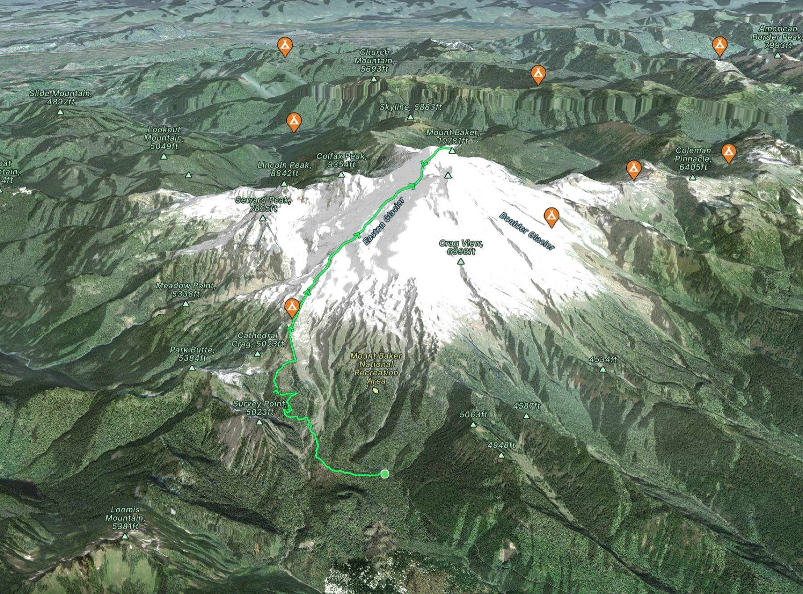
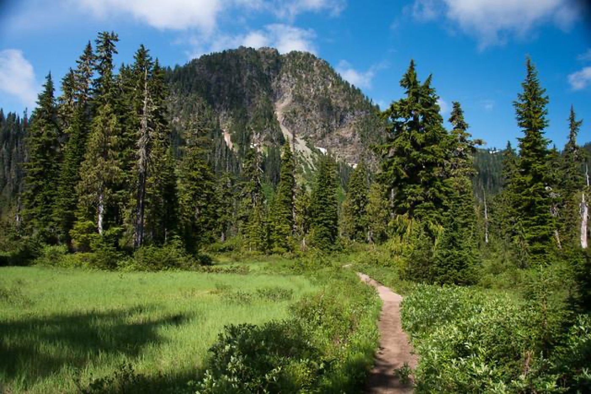
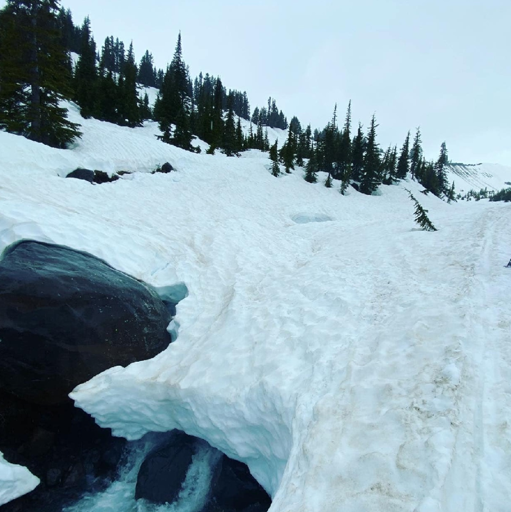
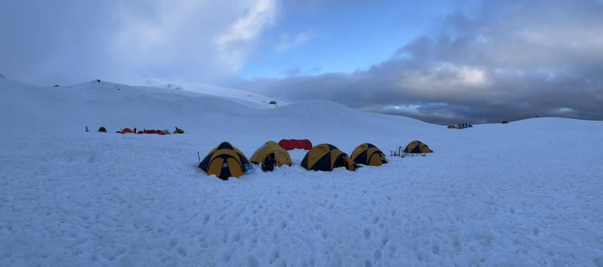
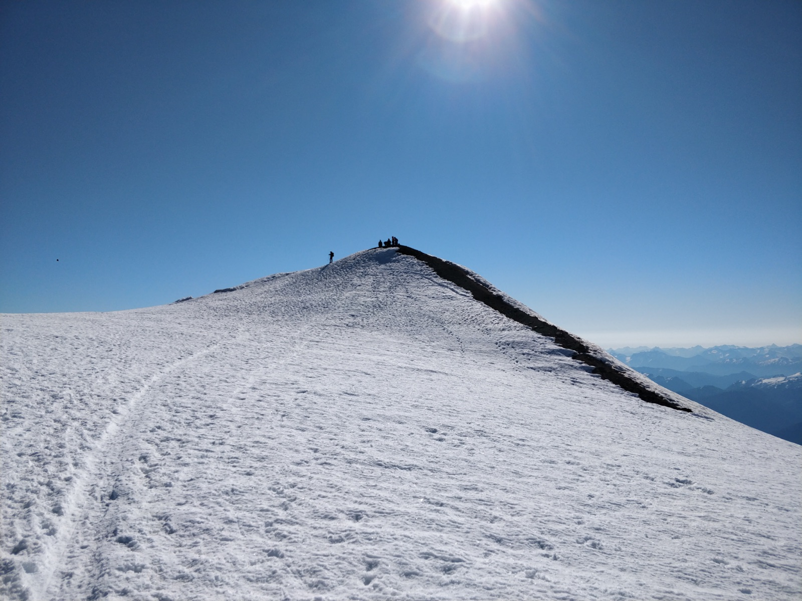
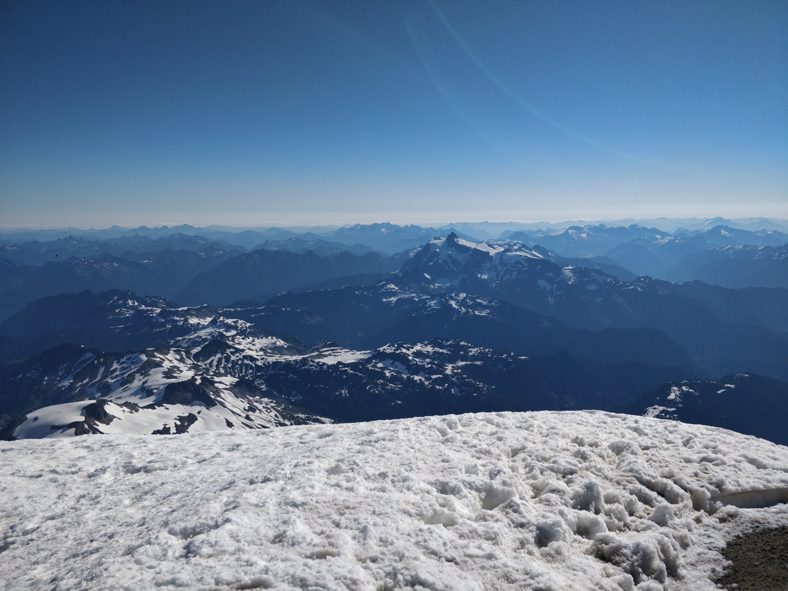

Use the three main elevations to plan the climb.
Start at Park Butte Trailhead, camp around Sandy Camp, and climb to Grant Peak via the Easton Glacier. These are planning numbers, not exact measurements: campsites vary, tracks shift, and this is a busy route.
3,300 ft. Schreiber's Meadow start, reasonable number of parking spots, Northwest Forest Pass or America the Beautiful required.
6,000-6,500 ft. About 4 miles from the trailhead with roughly 2,700-3,200 ft of elevation gain.
10,778 ft. About 3 miles above camp with roughly 4,000-4,500 ft of additional elevation gain.

Confirm you are using the south-side access.
Northern approaches
From Heliotrope Ridge Trail or Ptarmigan Ridge Trail: Coleman Glacier, North Ridge, and Park Glacier.
Eastern approach
The Boulder Glacier Route begins with the Boulder Ridge Trail.
Southern approaches
Easton Glacier and Squak routes are accessed from Park Butte and Scott Paul Trails. This page focuses on the Easton.
Work through the route in clear segments.
Think through the route from the trailhead through Schreiber's Meadow, the creek crossing around 3,700 ft, Sandy Camp, possible camping sites, the upper glacier, crater area, summit, views, and the full return.
Park Butte Trailhead, 3,300 ft
Busy trailhead, restroom at the corner, pass required. Start organized: boots, layers, water, sunscreen, and glacier gear packed so nothing gets lost in the lot.
Schreiber's Meadow
Easy trail movement at first. Use this time to settle pace and keep the team together before the terrain and load start to matter more.
Creek crossing around 3,700 ft
Expect a seasonal crossing. Move deliberately, protect feet from soaking early, and do not let a simple obstacle scatter the group.
Sandy Camp, 6,000-6,500 ft
Many possible campsites and many other parties. Build camp cleanly, melt/filter water as needed, organize summit gear before dark, and protect sleep.
Easton Glacier and upper mountain
Rope team efficiency matters. Keep spacing, manage slack, watch bridges and crevasse patterns, and communicate before stopping or changing pace.
Crater, summit, and views
Take photos and orient yourself, then keep moving. Weather, softening snow, fatigue, and the descent still affect the plan.





Check weather by elevation, not just by mountain name.
Compare forecasts at trailhead, camp, and summit elevations. Look for the pattern across all three, then decide whether the climb window is actually usable.
Drive, signal, road, parking, pass, restroom.
The drive to Park Butte Trailhead is roughly 2.5 hours. Trailhead road conditions can change, so check Mount Baker-Snoqualmie road and trail conditions before committing.
- Cell signal: expect to lose service about 40 minutes before the trailhead.
- Last town: Concrete.
- Parking: reasonable number of spots, but it is a busy place.
- Pass: Northwest Forest Pass or America the Beautiful.
- Restroom: at the corner of the trailhead area.
Choose the schedule that fits conditions and team pace.
Plan One
Plan Two
Plan Three
Prepare before you drive to the trailhead.
Rest, packing discipline, practice, time management, efficiency, teamwork, and confidence all matter. Solve small problems at home instead of at camp or during the summit start.
- Taper off and get rest a week before your climb.
- Pack your backpack. Check and re-check gear. Do not overpack.
- Know how to set up your tent, put crampons on, and get your harness on.
- Practice getting ready in the dark. Then practice getting ready in the dark again.
- Know how to use the blue bag before you need it.
- Optimize gear, process, packing, and setup.
- Rest, hydrate, stretch. Repeat.
- Plan ahead, give yourself buffer time, and arrive early.
- Take charge of your time. Do not rely on being handed time by guides or the group.
- Efficiency, teamwork, and good luck are vital to success.
- Show confidence in yourself, your training, and your teammates.
Have a plan for the long, repetitive parts.
Expect steady, repetitive movement for hours. Break the day into manageable sections and use what worked on your long endurance training hikes.
- Count 50-100 steps, then repeat.
- Prepare positive slogans to tell yourself.
- Remind yourself why you are doing this.
- You have done the training. You can do this.
- Trust your gear, the rope lead or guide, and fellow climbers.
Budget time and energy for the full descent.
Plan to descend all the way to the trailhead, or at minimum return to camp with enough energy to pack out.
Fatigue, water, wet gear, and packed camp can make the return feel bigger than expected.
Drive home safely or stay the night: car camp or book a hotel close by.